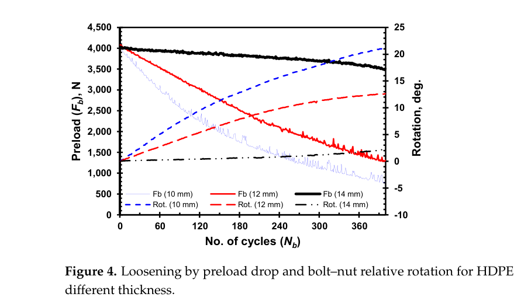
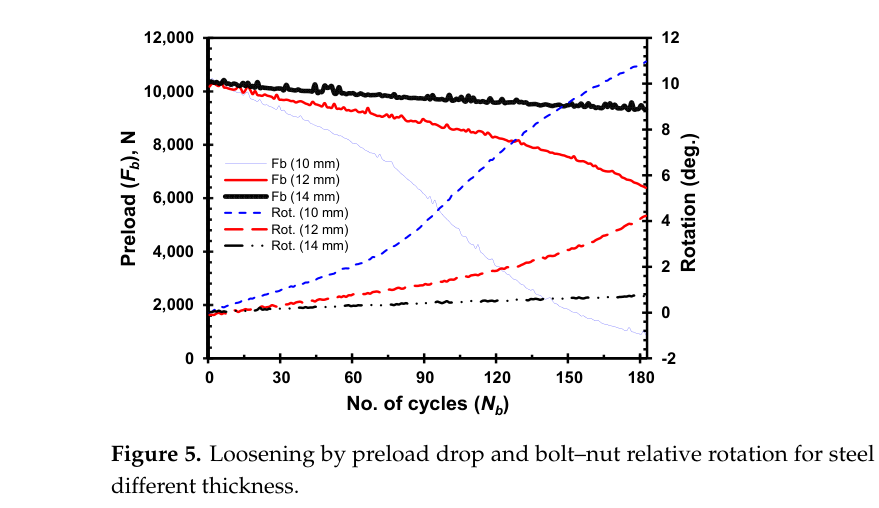

Rousseau 2025 — estudo de caso— case study
M12, espessura de membro t=10/12/14 + par HDPEM12, member thickness t=10/12/14 + HDPE pair
Figura do artigoPaper figure


Figura(s) originais do artigo (recorte do PDF) — a fonte dos pontos que foram digitalizados.Original figure(s) from the paper (PDF crop) — the source of the digitized points.
Condições do ensaioTest conditions
| ReferênciaReference | Rousseau & Bouzid (2025). Materials 18(2):462 · doi:10.3390/ma18020462 |
| ParafusoBolt | M12x1.75 |
| Pré-carga F0Preload F0 | 4–10 kN |
| AmplitudeAmplitude | ±0.04–0.50 mm |
| FrequênciaFrequency | 1 Hz |
| Família / nº de curvasFamily / curves | transverse · 8 |
| MAE medianomedian | 0.025 |
⚠ par polimérico (HDPE) — fora do domínio metálico declarado
Informações do artigo — aparato, corpo-de-prova, matriz de ensaiosPaper information — apparatus, specimen, test matrix
Rousseau & Bouzid 2025 (Materials) — clamped-member material & thickness, M12
Citation: Rousseau & Bouzid, "Effect of Clamped Member Material and Thickness on Bolt Self-Loosening Under Transverse Loads", *Materials* 18(2):462 (2025). DOI: 10.3390/ma18020462 (open access, CC BY; PMC11766740) PDF: pdfs_open_access/rousseau2025_materials_M12.pdf (= BAS_V2_papers/A.../Effect of Clamped Member Material and Thickness...pdf)
Apparatus
- Custom transverse-loosening rig built on a DS-6000 HLM variable-stress fatigue machine
(Fatigue Dynamics Inc., MI): rotary motor + crank converted to reciprocating lateral movement of one clamped member — displacement controlled, ~1 Hz.
- Moving member supported on INA-HYDREL FE roller bearings (removes parasitic friction).
- Bolt axial load via calibrated load cell (linear range, M12 calibration below yield);
transverse force also measured; LVDT ±0.63 mm on the moving member close to the joint; magnetic cycle counter with automatic test stop; nut rotation tracked.
- Two clamped members of equal thickness + bolt + nut + two washers (2.4 mm each).
Specimen
- M12 × 1.75 hex bolt + nut, grade 8.8; hole diameter 13.6 mm (1.6 mm clearance).
- Members: steel and HDPE, thicknesses 10 / 12 / 14 mm → grip lengths
25 / 29 / 33 mm (incl. washers).
Trial matrix
| Series | Member | t (mm) | F0 (N) | Amplitude | Cycles |
|---|---|---|---|---|---|
| Fig 4 | HDPE | 10 / 12 / 14 | ~4,000 | main test amplitude (paper's FE comparison uses 0.5 mm; Table 2 for exact values) | ~400 |
| Fig 5 | steel | 10 / 12 / 14 | ~10,250–10,350 | same rig setting | ~180 |
| Fig 10 | steel | fixed | — | 0.03 / 0.05 / 0.10 mm sweep | not digitized |
| conditioning ref | — | — | — | 0.2 mm × 100 cycles mentioned in text | — |
Digitized curves
| CSV | Figure | Condition | pts | F/F0 end |
|---|---|---|---|---|
| rousseau2025_hdpe_t10.csv | 4 | HDPE t=10 | 16 | 0.213 |
| rousseau2025_hdpe_t12.csv | 4 | HDPE t=12 | 13 | 0.321 |
| rousseau2025_hdpe_t14.csv | 4 | HDPE t=14 | 9 | 0.875 |
| rousseau2025_steel_t10.csv | 5 | steel t=10 | 15 | 0.088 |
| rousseau2025_steel_t12.csv | 5 | steel t=12 | 13 | 0.624 |
| rousseau2025_steel_t14.csv | 5 | steel t=14 | 10 | 0.903 |
Nut-rotation traces (secondary axis of Figs 4/5) — steel pair DIGITIZED 2026-08-19 (rousseau2025_steel_t{10,12}_rotation_deg.csv, see ANCHORS_CSV_MANIFEST; deu as leituras da adocao per_case.steel_t10 — dF/dtheta=919,7 N/deg r2=0,9997). HDPE traces RE-EXTRACTED from the PDF 2026-08-19 night (dash-attribute + absolute tick calibration; the Rodada-4 vector JSON is CORRUPTED for fig4 — valid only for fig5): theta_fim 21.27/12.65/2.16 deg, dF/dtheta 138/207 N/deg (varies with thickness). CSVs rousseau2025_hdpe_t{10,12,14}_rotation_deg.csv — available in the PDF if rotation-vs-preload coupling data is needed (they show rotation onset matching preload drop for t=10/12, near-zero rotation for t=14).
⚠️ ERRATA DO PAPER + round-trip da nossa digitalizacao (2026-08-02)
- A Fig. 7 esta ROTULADA ERRADO: diz "% of Preload Loss" mas o eixo e'
RETENCAO. Prova interna: a serie de Nb=182 esta ABAIXO da de Nb=100 (62 vs 79; 43 vs 62) — mais ciclos com menos perda e' impossivel.
- Lida como retencao, a Fig. 7 VALIDA a nossa digitalizacao da Fig. 4
(round-trip independente, duas figuras do mesmo paper): t14 97/96 (nosso 97,9/96,2) · t12 79/62 (nosso 80,1/62,3) — dentro de 1 ponto percentual.
- ⚠️ A t10 e' a UNICA que discorda: Fig. 7 da 62/43 e a nossa curva
67,2/46,3 — ~5 pontos a mais nas duas leituras, no mesmo sentido. Com as outras duas batendo a 1 ponto, isto e' caveat de digitalizacao da t10, nao ruido de leitura. Ela e' hoje uma das piores da fonte (2,29x) — parte pode ser DADO. Re-digitalizar a t10 decide.
- A Fig. 7 tambem publica rigidez de junta por espessura
(107 / 113 / 120, razao +12 % de t14 para t10) — ancora potencial para k_j/k_member_shear, ainda NAO usada: o eixo diz kN/mm com x10^2, o que daria 10,5-12,1 MN/mm (implausivel para HDPE); como N/mm da 10,5-12,1 kN/mm, que e' a ordem certa. Resolver a unidade exige o trecho que descreve o calculo de Kj (nao localizado no PDF). Detalhe: New_Theory/rousseau_fig7_validacao.md.
Digitization caveats
- Normalized by each curve's own plotted initial value (HDPE ~4.0 kN; steel ~10.3 kN).
- Fb traces are noisy (±100 N ripple); CSVs follow the trace centerline. Error ±0.02 F/F0.
- ~~Exact amplitude for Figs 4/5 needs confirmation from Table 2~~ RESOLVIDO 2026-08-01
(PDF oficial baixado, Rodada 6): HDPE 0,5/0,49/0,38 mm (confere com o cfg) e ACO 0,05/0,05/0,04 mm a 10 kN — o registry rodava o aco a 0,5 mm (10x; ERRATUM New_Theory/rousseau_erratum_resultado.md: input corrigido, 3 excecoes retratadas por piso invalido do par aco-t10<->t12, fit do aco com procedencia contaminada). Fig. 6 compara HDPE x aco a 0,2 mm; Fig. 10 varre 0,03/0,05/0,10 mm no aco. (linha original: text states the companion FE model used 0.5 mm; the rig LVDT range is ±0.63 mm).
- 10 mm HDPE curve is very noisy near the end (spikes) — smoothed visually.
V2 calibration mapping
- Member-stiffness isolation set: same bolt/preload class, member E varies 100×
(HDPE ~1 GPa vs steel ~200 GPa) and thickness varies grip 25→33 mm.
- HDPE t=14 (no rotation, slow quasi-linear decay) ≈ pure embedding/viscoelastic creep
→ k_emb_scale / k_creep_scale decoupled from rotation.
- Steel t=10 (fast rotational collapse) →
k_loose_scale_tr. - The t-sweep at fixed material →
Phi_tr_correction/ Greenwood-Williamson [K(s)]
member-stiffness sensitivity — thinner (less stiff grip) → dramatically faster loosening.
- Rotation onset data (not digitized) supports the two-factor rotation threshold.
Modelo vs dadoModel vs data
Cada card = uma curva digitalizada deste estudo: a linha é a previsão do modelo (config adotada, do store canônico) e os pontos são o dado medido; o badge traz o MAE.Each card = one digitized curve from this study: the line is the model prediction (adopted config, from the canonical store) and the dots are the measured data; the badge shows the MAE.
ReprodutibilidadeReproducibility
Cada card tem ↓ CSV (modelo + dado da curva). Os CSVs digitalizados originais ficam em Models/CALIBRATION_AND_VALIDATION/curve_library/digitized_csv/; a curva do modelo vem do store canônico (config adotada por fonte). Para reproduzir localmente:Each card has ↓ CSV (curve model + data). The original digitized CSVs live in Models/CALIBRATION_AND_VALIDATION/curve_library/digitized_csv/; the model curve comes from the canonical store (adopted per-source config). To reproduce locally:
Ver também o guia de uso do programa e a metodologia.See also the program usage guide and the methodology.